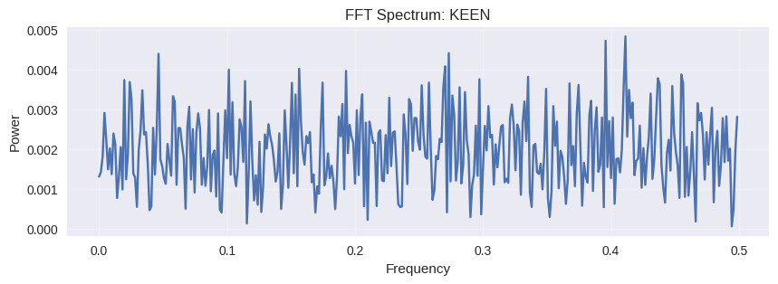

4.0 Distribusi Risiko (EDA)
Boxplot Log-Return menunjukkan seberapa lebar rentang fluktuasi harga harian.

Insight: SLIS & ARKO memiliki "kumis" (whiskers) terpanjang dan outlier terbanyak, menandakan risiko harian tertinggi.
5.0 Analisis Siklus (FFT Spectrum)
Menguji hipotesis: "Apakah ada pola mingguan/bulanan yang teratur?"
ARKO

KEEN
OASA

POWR

SLIS

6.0 Deteksi Data Burst (Anomali)
Visualisasi titik waktu (Merah) di mana harga bergerak ekstrem (Z > 2.5).
ARKO

KEEN

OASA

POWR

SLIS

Titik Merah menandakan kejadian pasar luar biasa. Pada SLIS, anomali ini seringkali berkorelasi dengan rilis berita subsidi EV.
7.0 Kesimpulan: Profil Risiko

Low Risk Profile
POWR (19 Anomali): Paling stabil. Cocok untuk investor konservatif yang ingin eksposur ke transisi energi.
High Risk Profile
ARKO & SLIS (>30 Anomali): Volatilitas tinggi. Menawarkan peluang *high return* namun dengan risiko *capital loss* yang signifikan.